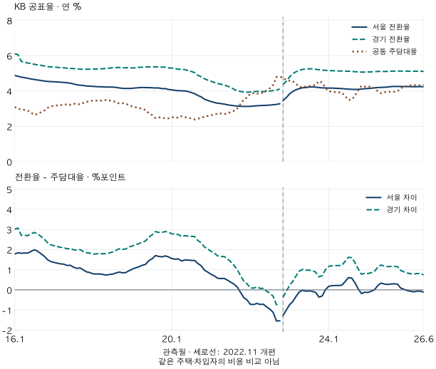

금리와 상환 부담 · 공표율의 비교
주담대 금리와 전월세 전환율: 서울·경기의 역전 기간은 같았을까?
2016년 1월~2026년 6월 KB 공표율을 비교하면 전환율이 주담대 금리보다 낮은 달은 서울 36개월·경기 7개월입니다. 전체 월별 표, 시점 민감도와 개인 계약에 적용할 때의 한계를 확인하세요.
분석 기간 · 2016.1~2026.6 KB 공표율 | 보유 자료 스냅샷 생성 · 2026-10-03
전월세 전환율보다 주담대 금리가 높았던 때는 언제일까요? KB 공표 자료의 2016년 1월~2026년 6월을 같은 관측월로 맞추면, 전환율이 주담대 금리보다 낮은 달은 서울 36개월, 경기 7개월입니다. 같은 전국 공통 금리를 대입해도 지역 전환율에 따라 기간이 달라집니다.
전환율과 주담대 금리는 무엇을 비교하나요?
전월세 전환율은 전세보증금과 월세보증금의 차액에 비해 연간 월세가 얼마인지 나타냅니다. KB 공식 화면은 월세×12÷(전세보증금−월세보증금)×100이라는 산식을 제시합니다. 월세와 보증금은 같은 금액 단위여야 하며, 분모는 집값이 아닙니다.
이 글의 주담대 금리는 KB 소득 연계 통계에 포함된 전국 공통 월계열입니다. 기준금리도, 임차인이 받는 전세대출 금리도 아닙니다. 두 계열 모두 연 %로 읽되, 지역 전환율에서 공통 주담대율을 뺀 차이는 %포인트로 표시합니다.
KB의 2024년 해설에도 서울 전환율의 과거 수치가 나옵니다. 그러나 이번에 확인한 공개 설명만으로 지역 전환율의 세부 주택 유형과 가중을 모두 확정하지는 못했습니다. 이를 아파트 전체의 동일 주택 수익률이나 법정 전환 상한으로 부르지 않습니다.
서울과 경기의 역전 기간은 같았나요?
같지 않았습니다. 여기서 ‘역전’은 단순히 전환율−주담대율이 0보다 작은 달입니다. 서울에서는 2021년 10월~2023년 11월, 2024년 11월~2025년 2월, 2026년 1~6월에 해당합니다. 경기는 2022년 6~12월뿐입니다.

| KB 지역 | 전환율 높음 | 전환율 낮음 | 같음 | 누락 |
|---|---|---|---|---|
| 서울 | 90 | 36 | 0 | 0 |
| 경기 | 119 | 7 | 0 | 0 |
| 수도권 | 113 | 13 | 0 | 0 |
보조로 제시한 수도권은 2022년 1월~2023년 1월의 13개월입니다. KB 수도권 계열은 인천을 포함하므로 서울과 경기의 단순 평균이나 이 블로그의 수집 경기 거래지역과 같지 않습니다. 수도권 한 줄로 서울·경기의 기간을 대신하면 차이가 가려집니다.
서울의 첫 음수 구간은 개편 경계를 가로지릅니다. 26개월 연속이라는 표현은 보관된 공표값의 부호가 연속이었다는 뜻입니다. 같은 표본의 경제적 상태가 26개월 지속됐다고 입증한 것은 아닙니다. 마지막 구간도 관측 종료월인 2026년 6월에서 잘린 것이며, 그때 끝났다고 말할 수 없습니다.
양수·음수를 포함한 모든 연속 구간
| 지역 | 기간 | 개월 | 비교 |
|---|---|---|---|
| 서울 | 2016-01~2021-09 | 69 | 전환율이 높음 |
| 서울 | 2021-10~2023-11 | 26 | 전환율이 낮음 |
| 서울 | 2023-12~2024-10 | 11 | 전환율이 높음 |
| 서울 | 2024-11~2025-02 | 4 | 전환율이 낮음 |
| 서울 | 2025-03~2025-12 | 10 | 전환율이 높음 |
| 서울 | 2026-01~2026-06 | 6 | 전환율이 낮음 |
| 경기 | 2016-01~2022-05 | 77 | 전환율이 높음 |
| 경기 | 2022-06~2022-12 | 7 | 전환율이 낮음 |
| 경기 | 2023-01~2026-06 | 42 | 전환율이 높음 |
| 수도권 | 2016-01~2021-12 | 72 | 전환율이 높음 |
| 수도권 | 2022-01~2023-01 | 13 | 전환율이 낮음 |
| 수도권 | 2023-02~2026-06 | 41 | 전환율이 높음 |
한 달 차이에도 경계가 달라지나요?
서울 전환율에 같은 달 금리를 붙이면 음수는 36개월입니다. 전월 금리를 붙이면 35개월, 익월 금리를 붙이면 37개월로 달라집니다. 이동 비교에서는 양끝의 짝 없는 달을 채우지 않아 각각 125개월만 유효합니다. 이는 당시 다음 달 금리를 알 수 있었다는 뜻이 아니라 날짜 선택에 대한 민감도입니다.
서울은 같은 달 차이의 절댓값이 0.10%포인트 이내인 달이 15개월, 0.05%포인트 이내가 6개월입니다. 근소한 차이의 부호를 큰 경제적 우위로 읽지 않도록 함께 셌습니다. 두 폭은 설명을 위한 사전 비교 폭이며, 오차범위나 통계적 유의성 기준이 아닙니다.
| 지역·금리 시점 | 유효 월 | 음수 월 | 0.05 이내 | 0.10 이내 |
|---|---|---|---|---|
| 서울 · 전월 금리 | 125 | 35 | 7 | 16 |
| 서울 · 같은 월 금리 | 126 | 36 | 6 | 15 |
| 서울 · 익월 금리 | 125 | 37 | 5 | 15 |
| 경기 · 전월 금리 | 125 | 6 | 1 | 3 |
| 경기 · 같은 월 금리 | 126 | 7 | 0 | 6 |
| 경기 · 익월 금리 | 125 | 8 | 1 | 6 |
| 수도권 · 전월 금리 | 125 | 12 | 1 | 5 |
| 수도권 · 같은 월 금리 | 126 | 13 | 2 | 3 |
| 수도권 · 익월 금리 | 125 | 14 | 1 | 3 |
비교 기간은 공통 자료가 지원하는 2016년 1월~2026년 6월로 먼저 고정했습니다. 원래 검토한 2011년 이후 전체 기간은 이 전환율 자료로 지원되지 않습니다. 다른 기관의 전환율이나 과거 월세이율을 붙여 긴 역사처럼 만들지 않았습니다.
전환율보다 대출금리가 낮으면 전세가 유리하지 않나요?
같은 주택의 추가 보증금과 본인의 실제 조달 조건을 비교한다면 유용한 질문입니다. KB의 임차 비용 해설도 전환율과 대출금리를 연결해 설명합니다. 추가 보증금으로 절약하는 연 월세와 그 자금을 마련하는 비용을 비교하는 원리는 분명합니다.
다만 이 글의 두 선은 그 계산에 필요한 개인 조건이 아닙니다. 전국 주담대율을 전세대출율로 대신하거나, 서울 공표 전환율을 특정 집의 협상 조건으로 넣으면 서로 다른 대상을 비교하게 됩니다. 매수까지 검토한다면 보유·거래비용, 가격 변화와 자기자금의 기회비용도 따로 필요합니다. 원금 상환은 현금 유출이지만 모두 이자 비용은 아닙니다.
- 같은 집의 두 조건을 적습니다. 전세보증금, 월세보증금, 월세와 조건을 제시받은 날짜를 확인합니다. 지역 통계가 아닌 이 차액으로 전환율을 계산합니다.
- 추가 보증금의 조달 방법을 나눕니다. 자기자금과 실제 대출 견적의 금리·수수료를 확인합니다. 주담대와 전세대출을 섞지 않습니다.
- 비용과 위험을 별도로 확인합니다. 보증금 반환 가능성, 거주 기간과 계약 조건을 살피고, 매수안은 원금·이자·기타 지출의 현금흐름을 작성합니다.
공표 금리차는 비교할 질문을 찾는 데 도움이 됩니다. 어느 달에 서울과 경기의 부호가 달랐는지는 확인할 수 있지만, 그때 모든 가구가 같은 선택을 했어야 한다는 결론은 나오지 않습니다.
126개월 원값·검증·출처 확인하기
자료는 2026년 10월 3일 수집한 KB 전월세 전환율 및 소득 연계 주담대 월계열입니다. 전환율 수집시각은 07:36:59 UTC, 금리는 07:37:14 UTC입니다. 날짜 키는 관측월이며 발표일이 아닙니다. 개정이 반영된 보관 자료이므로 과거 각 월의 실시간 이용 가능 정보를 복원하지 않았습니다. 현재 10월의 대출 상품 조건을 안내하는 글도 아닙니다.
전환율의 보관 범위는 2015년 12월~2026년 9월이며 첫 달은 세 지역 모두 결측입니다. 주담대율의 끝월은 2026년 6월입니다. 공통 126개월에는 누락이 없고, 결측 대체·보간은 하지 않았습니다. 원천 588행과 독립 계산의 1,134개 월·지역·시점 비교 및 42개 연속 구간을 대조했습니다. 추가적인 비공개 계약·단지·세대수 통계는 사용하지 않았습니다.
KB 공식 화면은 매월 15일이 포함된 주의 월요일을 조사 기준으로 안내합니다. 이런 조사 시점과 대출 관측월이 동일한 정보 시점을 보장하지는 않습니다. 상세 전환율 유형·가중, 주담대 고정/변동 구성은 확인하지 못했습니다. KB 금융 리뷰의 2025년 12월 4.23%, 2026년 1월 4.29%는 신규취급 기준으로 설명되며 보관값과 일치합니다. 일부 일치만으로 전체 계열의 한국은행 통계 항목을 독립 인증한 것으로 표시하지 않았습니다.
차이와 부호는 보관된 원값으로 계산하고, 아래 표만 소수 둘째 자리로 표시했습니다. 반올림하면 0.00으로 보여도 원값 부호는 다를 수 있습니다. 공표율과 파생 요약은 공개 JSON으로도 제공합니다. 지역의 실제 평균 대출 조건이나 인과·예측 결과가 아닙니다.
| 관측월 | 주담대율 | 서울 | 경기 | 수도권 |
|---|---|---|---|---|
| 2016-01 | 3.10 | 4.88 / +1.78 | 6.11 / +3.01 | 5.52 / +2.42 |
| 2016-02 | 2.99 | 4.84 / +1.85 | 6.06 / +3.07 | 5.48 / +2.49 |
| 2016-03 | 2.97 | 4.79 / +1.82 | 5.68 / +2.71 | 5.43 / +2.46 |
| 2016-04 | 2.93 | 4.76 / +1.83 | 5.64 / +2.71 | 5.40 / +2.47 |
| 2016-05 | 2.89 | 4.72 / +1.83 | 5.58 / +2.69 | 5.35 / +2.46 |
| 2016-06 | 2.77 | 4.68 / +1.91 | 5.56 / +2.79 | 5.32 / +2.55 |
| 2016-07 | 2.66 | 4.65 / +1.99 | 5.51 / +2.85 | 5.28 / +2.62 |
| 2016-08 | 2.70 | 4.62 / +1.92 | 5.48 / +2.78 | 5.24 / +2.54 |
| 2016-09 | 2.80 | 4.60 / +1.80 | 5.46 / +2.66 | 5.22 / +2.42 |
| 2016-10 | 2.89 | 4.57 / +1.68 | 5.42 / +2.53 | 5.17 / +2.28 |
| 2016-11 | 3.04 | 4.55 / +1.51 | 5.39 / +2.35 | 5.14 / +2.10 |
| 2016-12 | 3.13 | 4.54 / +1.41 | 5.37 / +2.24 | 5.13 / +2.00 |
| 2017-01 | 3.16 | 4.53 / +1.37 | 5.36 / +2.20 | 5.11 / +1.95 |
| 2017-02 | 3.19 | 4.52 / +1.33 | 5.34 / +2.15 | 5.10 / +1.91 |
| 2017-03 | 3.21 | 4.50 / +1.29 | 5.32 / +2.11 | 5.09 / +1.88 |
| 2017-04 | 3.21 | 4.49 / +1.28 | 5.32 / +2.11 | 5.07 / +1.86 |
| 2017-05 | 3.26 | 4.47 / +1.21 | 5.30 / +2.04 | 5.05 / +1.79 |
| 2017-06 | 3.22 | 4.44 / +1.22 | 5.28 / +2.06 | 5.04 / +1.82 |
| 2017-07 | 3.28 | 4.40 / +1.12 | 5.27 / +1.99 | 5.02 / +1.74 |
| 2017-08 | 3.28 | 4.35 / +1.07 | 5.26 / +1.98 | 4.99 / +1.71 |
| 2017-09 | 3.24 | 4.33 / +1.09 | 5.24 / +2.00 | 4.97 / +1.73 |
| 2017-10 | 3.33 | 4.32 / +0.99 | 5.23 / +1.90 | 4.96 / +1.63 |
| 2017-11 | 3.39 | 4.28 / +0.89 | 5.23 / +1.84 | 4.95 / +1.56 |
| 2017-12 | 3.42 | 4.28 / +0.86 | 5.24 / +1.82 | 4.95 / +1.53 |
| 2018-01 | 3.47 | 4.26 / +0.79 | 5.25 / +1.78 | 4.95 / +1.48 |
| 2018-02 | 3.46 | 4.25 / +0.79 | 5.25 / +1.79 | 4.95 / +1.49 |
| 2018-03 | 3.45 | 4.24 / +0.79 | 5.26 / +1.81 | 4.95 / +1.50 |
| 2018-04 | 3.47 | 4.24 / +0.77 | 5.27 / +1.80 | 4.95 / +1.48 |
| 2018-05 | 3.49 | 4.23 / +0.74 | 5.28 / +1.79 | 4.96 / +1.47 |
| 2018-06 | 3.46 | 4.23 / +0.77 | 5.30 / +1.84 | 4.96 / +1.50 |
| 2018-07 | 3.44 | 4.22 / +0.78 | 5.33 / +1.89 | 4.98 / +1.54 |
| 2018-08 | 3.36 | 4.20 / +0.84 | 5.33 / +1.97 | 4.97 / +1.61 |
| 2018-09 | 3.29 | 4.17 / +0.88 | 5.33 / +2.04 | 4.97 / +1.68 |
| 2018-10 | 3.31 | 4.15 / +0.84 | 5.32 / +2.01 | 4.95 / +1.64 |
| 2018-11 | 3.28 | 4.14 / +0.86 | 5.32 / +2.04 | 4.94 / +1.66 |
| 2018-12 | 3.19 | 4.15 / +0.96 | 5.33 / +2.14 | 4.95 / +1.76 |
| 2019-01 | 3.12 | 4.16 / +1.04 | 5.30 / +2.18 | 4.96 / +1.84 |
| 2019-02 | 3.08 | 4.18 / +1.10 | 5.32 / +2.24 | 4.98 / +1.90 |
| 2019-03 | 3.04 | 4.19 / +1.15 | 5.34 / +2.30 | 4.99 / +1.95 |
| 2019-04 | 2.98 | 4.20 / +1.22 | 5.35 / +2.37 | 5.00 / +2.02 |
| 2019-05 | 2.93 | 4.20 / +1.27 | 5.36 / +2.43 | 5.00 / +2.07 |
| 2019-06 | 2.74 | 4.19 / +1.45 | 5.37 / +2.63 | 5.01 / +2.27 |
| 2019-07 | 2.64 | 4.18 / +1.54 | 5.37 / +2.73 | 5.01 / +2.37 |
| 2019-08 | 2.47 | 4.17 / +1.70 | 5.37 / +2.90 | 5.00 / +2.53 |
| 2019-09 | 2.51 | 4.17 / +1.66 | 5.37 / +2.86 | 5.00 / +2.49 |
| 2019-10 | 2.50 | 4.14 / +1.64 | 5.35 / +2.85 | 4.98 / +2.48 |
| 2019-11 | 2.45 | 4.14 / +1.69 | 5.35 / +2.90 | 4.98 / +2.53 |
| 2019-12 | 2.45 | 4.09 / +1.64 | 5.31 / +2.86 | 4.94 / +2.49 |
| 2020-01 | 2.51 | 4.07 / +1.56 | 5.30 / +2.79 | 4.92 / +2.41 |
| 2020-02 | 2.52 | 4.04 / +1.52 | 5.27 / +2.75 | 4.90 / +2.38 |
| 2020-03 | 2.48 | 4.02 / +1.54 | 5.24 / +2.76 | 4.86 / +2.38 |
| 2020-04 | 2.58 | 4.01 / +1.43 | 5.23 / +2.65 | 4.86 / +2.28 |
| 2020-05 | 2.52 | 4.01 / +1.49 | 5.21 / +2.69 | 4.85 / +2.33 |
| 2020-06 | 2.49 | 3.97 / +1.48 | 5.16 / +2.67 | 4.81 / +2.32 |
| 2020-07 | 2.45 | 3.91 / +1.46 | 5.11 / +2.66 | 4.76 / +2.31 |
| 2020-08 | 2.39 | 3.85 / +1.46 | 5.04 / +2.65 | 4.70 / +2.31 |
| 2020-09 | 2.44 | 3.75 / +1.31 | 4.89 / +2.45 | 4.58 / +2.14 |
| 2020-10 | 2.47 | 3.67 / +1.20 | 4.81 / +2.34 | 4.50 / +2.03 |
| 2020-11 | 2.56 | 3.54 / +0.98 | 4.69 / +2.13 | 4.38 / +1.82 |
| 2020-12 | 2.59 | 3.47 / +0.88 | 4.62 / +2.03 | 4.32 / +1.73 |
| 2021-01 | 2.63 | 3.41 / +0.78 | 4.55 / +1.92 | 4.26 / +1.63 |
| 2021-02 | 2.66 | 3.35 / +0.69 | 4.48 / +1.82 | 4.20 / +1.54 |
| 2021-03 | 2.73 | 3.31 / +0.58 | 4.42 / +1.69 | 4.14 / +1.41 |
| 2021-04 | 2.73 | 3.29 / +0.56 | 4.38 / +1.65 | 4.11 / +1.38 |
| 2021-05 | 2.69 | 3.26 / +0.57 | 4.35 / +1.66 | 4.07 / +1.38 |
| 2021-06 | 2.74 | 3.22 / +0.48 | 4.28 / +1.54 | 4.01 / +1.27 |
| 2021-07 | 2.81 | 3.19 / +0.38 | 4.21 / +1.40 | 3.96 / +1.15 |
| 2021-08 | 2.88 | 3.17 / +0.29 | 4.10 / +1.22 | 3.88 / +1.00 |
| 2021-09 | 3.01 | 3.15 / +0.14 | 4.02 / +1.01 | 3.82 / +0.81 |
| 2021-10 | 3.26 | 3.14 / -0.12 | 3.98 / +0.72 | 3.78 / +0.52 |
| 2021-11 | 3.51 | 3.13 / -0.38 | 3.95 / +0.44 | 3.76 / +0.25 |
| 2021-12 | 3.63 | 3.13 / -0.50 | 3.94 / +0.31 | 3.75 / +0.12 |
| 2022-01 | 3.85 | 3.13 / -0.72 | 3.94 / +0.09 | 3.76 / -0.09 |
| 2022-02 | 3.88 | 3.15 / -0.73 | 3.97 / +0.09 | 3.78 / -0.10 |
| 2022-03 | 3.84 | 3.16 / -0.68 | 3.98 / +0.14 | 3.79 / -0.05 |
| 2022-04 | 3.90 | 3.18 / -0.72 | 3.98 / +0.08 | 3.79 / -0.11 |
| 2022-05 | 3.90 | 3.19 / -0.71 | 3.97 / +0.07 | 3.79 / -0.11 |
| 2022-06 | 4.04 | 3.19 / -0.85 | 3.97 / -0.07 | 3.80 / -0.24 |
| 2022-07 | 4.16 | 3.20 / -0.96 | 4.00 / -0.16 | 3.82 / -0.34 |
| 2022-08 | 4.35 | 3.23 / -1.12 | 4.03 / -0.32 | 3.85 / -0.50 |
| 2022-09 | 4.79 | 3.24 / -1.55 | 4.05 / -0.74 | 3.87 / -0.92 |
| 2022-10 | 4.82 | 3.28 / -1.54 | 4.12 / -0.70 | 3.93 / -0.89 |
| 2022-11 | 4.74 | 3.46 / -1.28 | 4.37 / -0.37 | 4.14 / -0.60 |
| 2022-12 | 4.63 | 3.63 / -1.00 | 4.56 / -0.07 | 4.33 / -0.30 |
| 2023-01 | 4.58 | 3.84 / -0.74 | 4.80 / +0.22 | 4.56 / -0.02 |
| 2023-02 | 4.56 | 3.98 / -0.58 | 4.99 / +0.43 | 4.73 / +0.17 |
| 2023-03 | 4.40 | 4.08 / -0.32 | 5.09 / +0.69 | 4.84 / +0.44 |
| 2023-04 | 4.24 | 4.14 / -0.10 | 5.17 / +0.93 | 4.92 / +0.68 |
| 2023-05 | 4.21 | 4.19 / -0.02 | 5.23 / +1.02 | 4.97 / +0.76 |
| 2023-06 | 4.26 | 4.20 / -0.06 | 5.24 / +0.98 | 4.99 / +0.73 |
| 2023-07 | 4.28 | 4.23 / -0.05 | 5.26 / +0.98 | 5.01 / +0.73 |
| 2023-08 | 4.31 | 4.23 / -0.08 | 5.26 / +0.95 | 5.01 / +0.70 |
| 2023-09 | 4.35 | 4.22 / -0.13 | 5.23 / +0.88 | 5.00 / +0.65 |
| 2023-10 | 4.56 | 4.20 / -0.36 | 5.21 / +0.65 | 4.97 / +0.41 |
| 2023-11 | 4.48 | 4.18 / -0.30 | 5.18 / +0.70 | 4.95 / +0.47 |
| 2023-12 | 4.16 | 4.17 / +0.01 | 5.17 / +1.01 | 4.95 / +0.79 |
| 2024-01 | 3.99 | 4.17 / +0.18 | 5.16 / +1.17 | 4.94 / +0.95 |
| 2024-02 | 3.96 | 4.17 / +0.21 | 5.15 / +1.19 | 4.94 / +0.98 |
| 2024-03 | 3.94 | 4.16 / +0.22 | 5.14 / +1.20 | 4.92 / +0.98 |
| 2024-04 | 3.93 | 4.15 / +0.22 | 5.14 / +1.21 | 4.92 / +0.99 |
| 2024-05 | 3.91 | 4.14 / +0.23 | 5.13 / +1.22 | 4.91 / +1.00 |
| 2024-06 | 3.71 | 4.12 / +0.41 | 5.13 / +1.42 | 4.90 / +1.19 |
| 2024-07 | 3.50 | 4.11 / +0.61 | 5.12 / +1.62 | 4.89 / +1.39 |
| 2024-08 | 3.51 | 4.10 / +0.59 | 5.11 / +1.60 | 4.88 / +1.37 |
| 2024-09 | 3.74 | 4.09 / +0.35 | 5.10 / +1.36 | 4.87 / +1.13 |
| 2024-10 | 4.05 | 4.10 / +0.05 | 5.09 / +1.04 | 4.86 / +0.81 |
| 2024-11 | 4.30 | 4.11 / -0.19 | 5.07 / +0.77 | 4.85 / +0.55 |
| 2024-12 | 4.25 | 4.13 / -0.12 | 5.07 / +0.82 | 4.86 / +0.61 |
| 2025-01 | 4.27 | 4.14 / -0.13 | 5.08 / +0.81 | 4.87 / +0.60 |
| 2025-02 | 4.23 | 4.16 / -0.07 | 5.09 / +0.86 | 4.88 / +0.65 |
| 2025-03 | 4.17 | 4.18 / +0.01 | 5.10 / +0.93 | 4.90 / +0.73 |
| 2025-04 | 3.98 | 4.20 / +0.22 | 5.11 / +1.13 | 4.91 / +0.93 |
| 2025-05 | 3.87 | 4.21 / +0.34 | 5.11 / +1.24 | 4.91 / +1.04 |
| 2025-06 | 3.93 | 4.22 / +0.29 | 5.11 / +1.18 | 4.92 / +0.99 |
| 2025-07 | 3.96 | 4.23 / +0.27 | 5.11 / +1.15 | 4.92 / +0.96 |
| 2025-08 | 3.96 | 4.25 / +0.29 | 5.12 / +1.16 | 4.94 / +0.98 |
| 2025-09 | 3.96 | 4.26 / +0.30 | 5.13 / +1.17 | 4.94 / +0.98 |
| 2025-10 | 3.98 | 4.26 / +0.28 | 5.13 / +1.15 | 4.94 / +0.96 |
| 2025-11 | 4.17 | 4.26 / +0.09 | 5.13 / +0.96 | 4.94 / +0.77 |
| 2025-12 | 4.23 | 4.26 / +0.03 | 5.13 / +0.90 | 4.94 / +0.71 |
| 2026-01 | 4.29 | 4.25 / -0.04 | 5.13 / +0.84 | 4.94 / +0.65 |
| 2026-02 | 4.32 | 4.25 / -0.07 | 5.12 / +0.80 | 4.93 / +0.61 |
| 2026-03 | 4.34 | 4.24 / -0.10 | 5.12 / +0.78 | 4.93 / +0.59 |
| 2026-04 | 4.31 | 4.25 / -0.06 | 5.12 / +0.81 | 4.93 / +0.62 |
| 2026-05 | 4.32 | 4.25 / -0.07 | 5.12 / +0.80 | 4.93 / +0.61 |
| 2026-06 | 4.36 | 4.24 / -0.12 | 5.11 / +0.75 | 4.92 / +0.56 |
분석·집필: 파파펭귄 (Nobot Kang). 에이전트로 원천 대조·계산·차트·초안 검토를 보조했습니다.